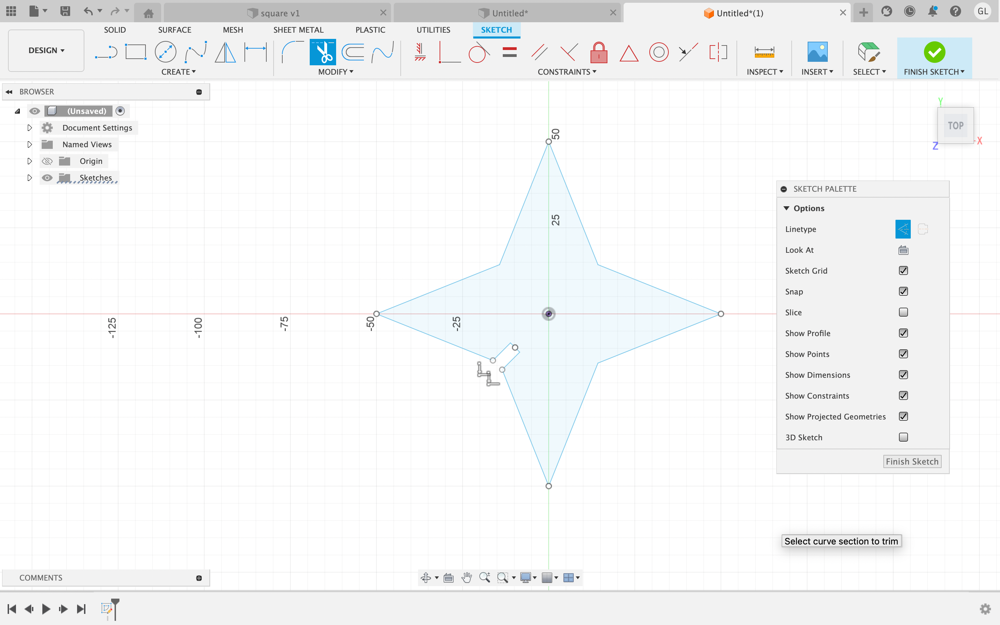
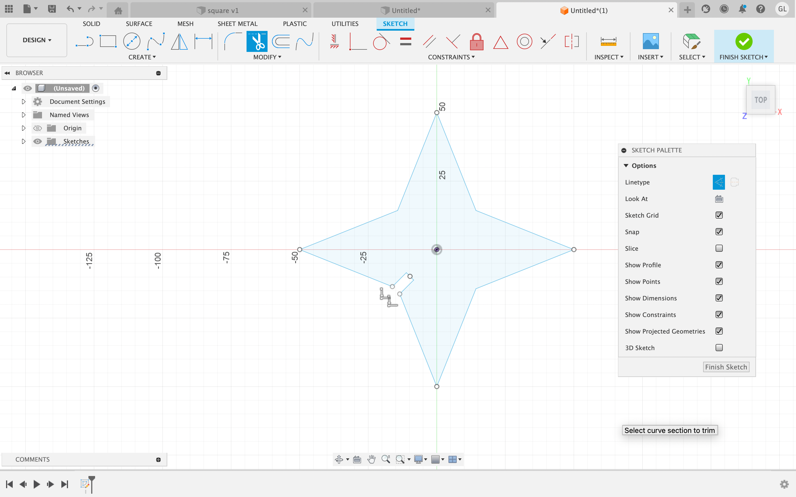
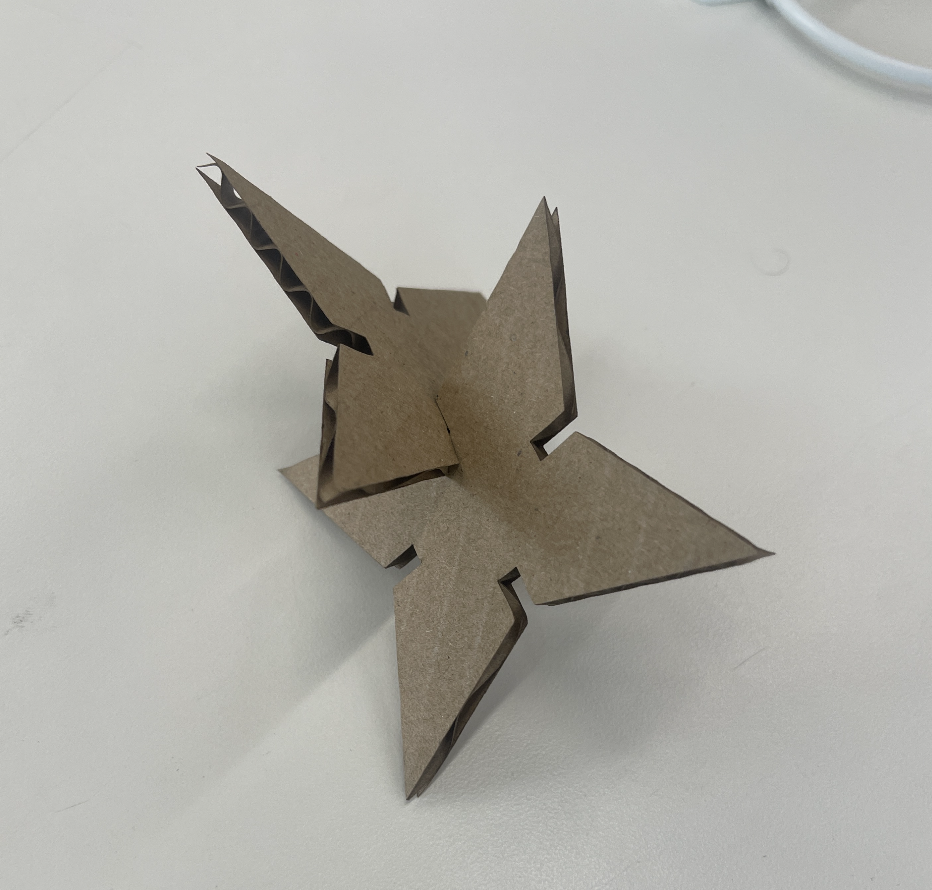
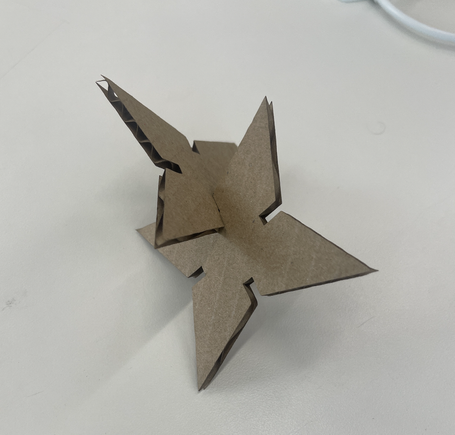

1. Press-Fit Construction Kit
In this class project, our goal was to create a press-fit construction kit using a CAD software, and a laser cutter. Essentially, we were attempting to design our own 2D shapes in the software Fusion360, which would later be implemented onto a laser cutted to cut out shapes of cardboard. These cardboard shapes were planned to have small notches, which would then be used to combine the 2D structures and build them together into a 3D structure. Furthermore, our chosen medium was cardboard, which had a thickness of 3.8mm; this meant that the width of the notches on our 2D shapes had to be approximately this size.
I wanted to create a 2D design of a "shuriken". Here is how I designed it in Fusion360:
 

First, I opened up Fusion 360, and crafted out a triangle. I then utilized the mirror and circular pattern tool to create the shape of the shuriken. After that, I crate construction lines in the middle of the shuriken, which would then be used to create the wedges in the shuriken, that would allow each individual shape to connect to one another. These wedges measure precisely 3.8mm in length.


After completing the design of the shuriken, I utilized the extruding tool to generate the thickness of the 2d object. This thickness (3.8mm) matched the thickness of the medium that we were using in the laser cutter: cardboard.
Final Product and Final Thoughts:
Here below you can see the final results of shuriken. One limitation in my process of designing the shuriken, was getting the nothces between each side of the shuriken to perfectly fit with the thickness of the cardboard. When initially laser cutting the cardboard, I realized that I should have made the width of the notches (in Fusion360) a little smaller than the actual thickness of the cardboard. This was because the laser cutter did burn off some of the cardboard, causing the size of the notches to be slightly bigger than planned.
 

2. Modeling Household Objects in Fusion 360:
Pencil Design:
Throughout my process creating this specific household object, I first created a 2D sketch of an inscribed polygon, which represented the shape of the pencil. First, I measured out the dimensions of the pencil using a caliper, and then implemented these sizes onto the Fusion360 application. Utilizing the extrude and fillet tool, I was able to take this model and generate a 3D design of the pencil. After generating the curved back end of the pencil, the pointy tip, and the sharp edges, I used the appearance tool and gave the 3D model and "Birch Wood" finish.


Paperclip Design:
Similar to the pencil design, I initally sketched out a 2D design of the paperclip (on the x-plane). I used straight lines, along with the tangent arc tool to generate the curved sides of the paperclip. After creating this 2D sketch, I created another sketch on the y-plane within Fusion360. I utilized this second sketch to create the thickness of the paperclip. In addition, I used the sweep tool, to extrude the sketch of the thickness of the paperclip throughout the inital 2D line of the paprerclip. was able to create a replica of a paperclip. After completing this design, I wanted to add a metal finish to the paperclip, so I used the apperance tool and applied a dark metal finish to the design.